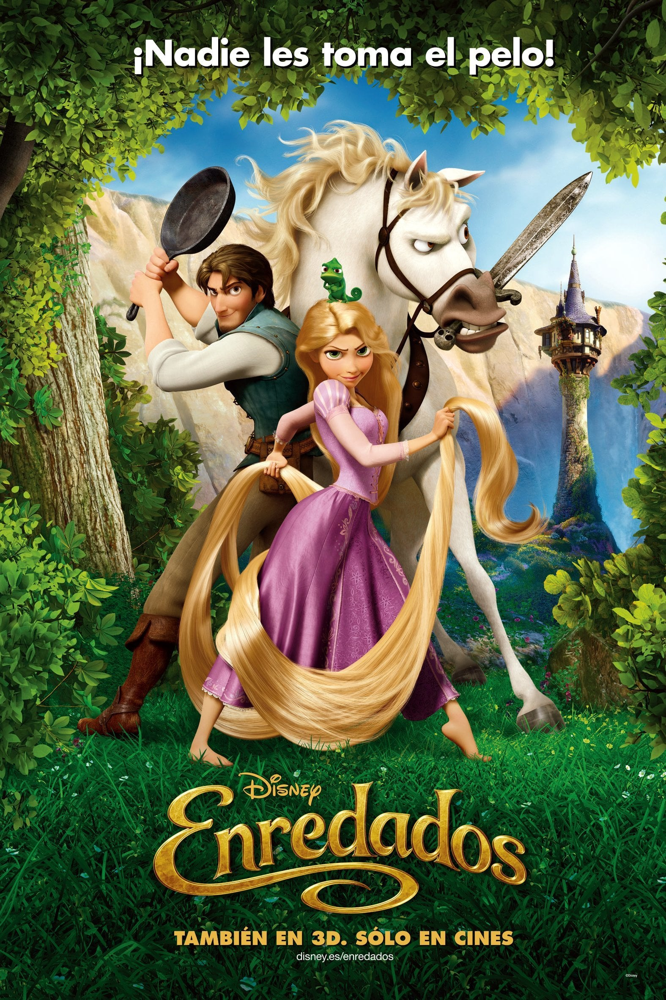

Año de estreno: 2010 Directores: Nathan Greno y Byron Howard Estudio: Walt Disney Animation Studios (Película número 50 de su canon clásico) Presupuesto: 260 millones de dólares (Una de las películas de animación más caras de la historia)
Rapunzel es una joven con una cabellera mágica de más de 20 metros de largo que ha pasado toda su vida encerrada en una torre oculta, bajo la estricta vigilancia de la controladora Madre Gothel. Su único deseo es salir para descubrir el origen de unas misteriosas luces flotantes que aparecen en el cielo cada año el día de su cumpleaños. La oportunidad perfecta surge cuando Flynn Rider, el bandido más encantador y buscado del reino, trepa a su torre para esconderse de la justicia. Tras capturarlo, Rapunzel sella un pacto con él: Flynn la guiará de incógnito hasta las luces a cambio de recuperar su botín. Juntos emprenden una divertida y caótica aventura llena de acción, héroes inesperados, romance y peligros que los obligarán a descubrir quiénes son realmente.

Veo en ti la luz: https://youtu.be/fZSZMp32XaA?si=CIU4RM3did9kexl6
Cuando empezare a vivir:https://youtu.be/NjkAgGwXaSs?si=SCqCIZSTbU7jzo8k
Sabia es mama:https://youtu.be/GHoolLt_oYo?si=8QXZLVVsu2T3-0Wc